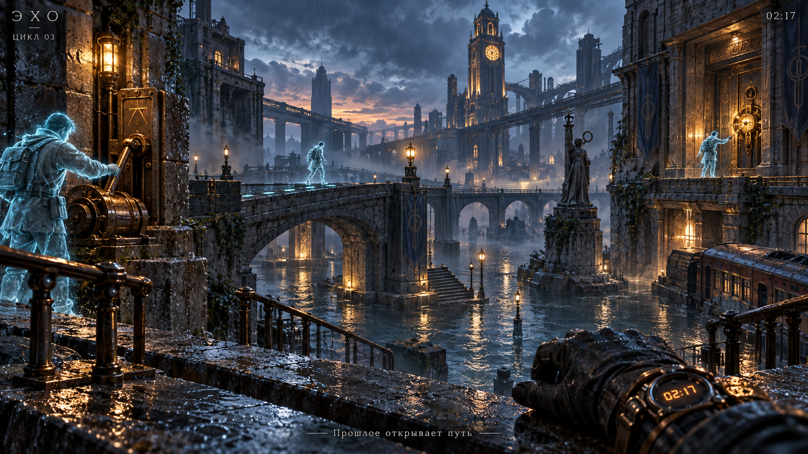

ГОРОД ВРЕМЕННЫХ ПЕТЕЛЬ
Три минуты. Затопленный город.
И единственный человек, которому ты можешь
доверять, — ты из прошлого.
3D-головоломка от первого лица · Лучше в наушниках
ТВОЙ СЛЕД ВО ВРЕМЕНИ
Найди механизм I на левом краю причала.
ЭХО / АРХИВ
ПЕТЛЯ ЗАМКНУЛАСЬ
Человек, который открыл тебе путь,
не пришёл из другого мира.
Он просто дождался тебя в прошлом.